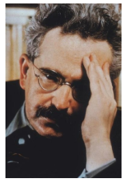

Capítulo 2: estudo da relação entre o emprego da tecnologia, a construção e a manutenção do poder do estado em diferentes níveis.
Nas grandes cidades atuais podemos verificar várias formas de morar e viver que estão relacionadas ao que se convencionou chamar de “estilo de vida”. Contudo, é importante que tenhamos a compreensão de que existe uma série de fatores a serem considerados quando pensamos a cidade atual, inclusive os aspectos relacionados ao desenvolvimento da produção e da cultura de massas. Vamos explorar tais conceitos, mas antes disso, vá pensando sobre quais os aspectos da vida em sociedade que mais lhe chamam a atenção e como os diferentes grupos expressam seus hábitos em meio à grande diversidade da vida nas cidades. Como podemos relacionar a vida nas cidades e a produção cultural de massa?
Contextualizando
A cidade inovadora – Construção Civil e as Cidades
A cidade contemporânea, apesar de grandes transformações, está mais próxima da cidade medieval do que esta última da cidade antiga. A cidade da Idade Média é uma sociedade abundante, concentrada em um pequeno espaço, um lugar de produção e de trocas em que se mesclam o artesanato e o comércio alimentados por uma economia monetária. É também o cadinho de um novo sistema de valores nascido da prática laboriosa e criadora do trabalho, do gosto pelo negócio e pelo dinheiro. É assim que se delineiam, ao mesmo tempo, um ideal de igualdade e uma divisão social da cidade, na qual os judeus são as primeiras vítimas. Mas a cidade concentra também os prazeres, os da festa, os dos diálogos na rua, nas tabernas, nas escolas, nas igrejas e mesmo nos cemitérios. Uma concentração de criatividade de que é testemunha a jovem universidade que adquire rapidamente poder e prestígio, na falta de uma plena autonomia.
Jacques Le Goff: 1998, p.25.
No texto acima temos uma bela descrição da cidade medieval feita pelo historiador francês Jacques Le Goff. Nela pode-se ler algo significativo para o nosso estudo, trata-se da visão feita a respeito da cidade contemporânea como sendo mais próxima da cidade medieval do que esta da cidade antiga. Guarde esta informação, pois ela será importante quando finalizarmos a discussão que faremos neste capítulo.
(Re)construindo conhecimentos
O desenvolvimento das cidades pode ser descrito como um processo de longa duração em que uma grande quantidade de fatores de ordem política, econômica, religiosa, etc., contribui para forjar um determinado tipo de sociedade. Não é possível, por exemplo, pensarmos as cidades da antiguidade oriental sem levarmos em consideração o aspecto religioso, que exercia uma função preponderante na ordenação sócio econômica daqueles locais. Da mesma forma, é impossível compreendermos a cidade moderna, típica da Revolução Industrial, sem o aparato político que garantiu a manutenção da ordem dentro dos padrões esperados para uma sociedade que se modernizava.
Da mesma forma podemos pensar sobre a forma como a cidade em que vivemos expressa determinados elementos que dizem respeito à cultura dos diferentes grupos que dela fazem parte. Alguns de nós vivemos em cidades pequenas, onde o trabalho se divide entre o rural e o urbano. Outros habitam em cidades maiores, onde a expressão da vida urbana se faz preponderante. Se fizermos uma pequena pesquisa na nossa própria história familiar, é bem possível que em um dado momento do passado nossos familiares tenham deixado o local onde nasceram a fim de garantir para si e sua família melhores oportunidades para a sobrevivência, migrando para regiões ou cidades onde a oferta de emprego ou algum tipo de benefício lhes acenava de forma promissora em relação ao futuro.
Você sabia?
Migração consiste no ato da população deslocar-se espacialmente, ou seja, pode se referir à troca de país, estado, região, município ou até de domicílio. As migrações podem ser desencadeadas por fatores religiosos, psicológicos, sociais, econômicos, políticos e ambientais.A migração interna corresponde ao deslocamento de pessoas dentro de um mesmo território, dessa forma pode ser entre regiões, estados e municípios. Tal deslocamento não provoca modificações no número total de habitantes de um país, porém, altera as regiões envolvidas nesse processo.No Brasil, um dos fatores que exercem maior influência nos fluxos migratórios é o de ordem econômica, uma vez que o modelo de produção capitalista cria espaços privilegiados para instalação de indústrias, forçando indivíduos a se deslocarem de um lugar para outro em busca de melhores condições de vida e à procura de emprego para suprir suas necessidades básicas de sobrevivência.Um modelo de migração muito comum no Brasil, que se intensificou nas últimas cinco décadas, é o êxodo rural, ou seja, a migração do campo para a cidade. A região Sudeste do Brasil, até o final do século XX, recebeu a maior quantidade de fluxos migratórios do país, principalmente o estado de São Paulo, pelo fato de fornecer maiores oportunidades de emprego em razão do processo de industrialização desenvolvido. No entanto, nas últimas décadas, as regiões Centro-Oeste e Norte têm sido bastante atrativas para os migrantes.
Adaptado de http://brasilescola.uol.com.br/brasil/migracao-interna-no-brasil.htm
Nas cidades, tornou-se comum a vida nos grandes condomínios residenciais, locais onde as pessoas passaram a viver e desenvolver novos hábitos em relação àquilo que a vida urbana podia lhes oferecer. Este fenômeno de mudança nas práticas através da incorporação de novos hábitos relativos ao grupo de pertencimento do qual passamos a fazer parte, já foi motivo de muitos estudos. Alguns teóricos dedicaram-se a compreender um fenômeno comum a vários países ao longo do século XX, trata-se da difusão do que se convencionou chamar de “cultura de massa”.
Quando falamos em cultura de massa, estamos nos referindo a um tipo de produção cultural destinada a população de um modo geral, normalmente elaborada e distribuída pelos grandes veículos de comunicação de massa, como os jornais de grande tiragem, revistas, programas de televisão e de rádio, cinema e mais recentemente as diversas páginas da web que difundem informação e cultura. Vem da Escola de Frankfurt o termo “indústria cultural”, sendo os teóricos Theodor W. Adorno e Max Horkheimer os responsáveis pelas primeiras críticas a respeito deste modelo como sendo algo imposto, meramente comercial e responsável pela homogeneizaçãodos padrões da cultura. Contudo, existem controvérsias em relação a isto. Se pegarmos como exemplo o cinema, veremos que Walter Benjamim, outro teórico do mesmo movimento, escreveu sobre a capacidade da obra cinematográfica em articular a reflexão crítica ao divertimento.
Quem é?
 Walter Benjamin foi um filósofo alemão de origem judaica, associado à Escola de Frankfurt que dedicou parte dos seus estudos a compreensão dos produtos culturais de massa, entre eles o cinema. Para este autor, o cinema é responsável por retirar a singularidade da arte, tornando-a algo acessível a um número cada vez maior de pessoas, tornando-se um importante veículo de informação e instrução das camadas populares.
http://libguides.wustl.edu/walterbenjamin
Temos, portanto, que o crescimento das cidades, especialmente as de caráter industrial, influenciou sobremaneira o crescimento da produção. Se tivermos como exemplo a segunda metade do século XX no Brasil, veremos que o desenvolvimento dos diferentes tipos de indústria colaboraram para o incremento da produção no país que saltou de uma posição meramente agrícola e exportadora, para a condição de Estado emergente em pleno desenvolvimento.
Porém, em relação ao início da industrialização brasileira existem controvérsias históricas e conceituais consideráveis. Vamos nos ater naquilo que nos servirá como um balizador deste processo, a saber, o incremento da indústria capitalista e a difusão e generalização do trabalho assalariado. Ainda no século XIX, Irineu Evangelista de Souza, o Barão de Mauá (1813-1889), foi um dos pioneiros na implantação de empresas no país e talvez o mais bem sucedido homem de negócios de sua época. Com uma visão política e econômica pautada nos preceitos do liberalismo, apostou em grandes projetos tendo atuado em diversas áreas, desde a iluminação pública e os transportes das cidades, estaleiros, ferrovias, bancos e até mesmo na implantação de um telégrafo transoceânico ligando o Brasil a Europa.
Irineu Evangelista de Souza, o Barão de Mauá
http://www.fcasa.com.br/wp-content/_cache/wp-cache-fa1df60a2024f7728231f635b5815f37.html
A ele seguiram-se outros empreendedores que atuaram de forma marcante na construção de um cenário favorável a indústria no país. Contudo, pode-se dizer que em determinados momentos o papel do Estado foi preponderante para a organização e o incentivo à produção brasileira.
Um dos momentos marcantes neste processo deu-se no século seguinte e diz respeito à Consolidação das Leis Trabalhistas levada a efeito no governo do então presidente da República Getúlio Vargas, no ano de 1943. Através desta lei unificou-se a legislação trabalhista existente, estabilizando as relações de trabalho num momento de crescimento e desenvolvimento da indústria brasileira. Nela, podem ser identificados alguns dos principais elementos de discussão do período no que diz respeito às garantias e deveres dos trabalhadores, entre eles a duração da jornada de trabalho, o salário mínimo, as férias anuais, a previdência social e a regulamentação dos sindicatos.
Propaganda política do governo Vargas
http://www.epsjv.fiocruz.br/noticias/reportagem/clt-comemora-70-anos
Também no seu período de governo, Vargas criou o Conselho Nacional de Petróleo no ano de 1938, a Companhia Siderúrgica Nacional (CSN) em 1941, a Companhia Vale do Rio Doce (CVRD) em 1942, a Companhia Nacional de Álcalis em 1943, a Fábrica Nacional de Motores em 1943, e a Companhia Hidroelétrica do São Francisco em 1945.
Outro momento crucial para o desenvolvimento e a modernização da indústria brasileira pode ser reconhecido no governo do presidente da República Juscelino Kubitschek. Eleito no ano de 1955, teve como lema de sua campanha a frase “50 anos em 5”, referindo-se a iniciativa de superar ao longo do seu mandato, o subdesenvolvimento que caracterizava os diferentes setores do Brasil naquele período.
Juscelino propôs um programa de modernização do país chamado de Plano de Metas, criado por um Conselho de Desenvolvimento e que se pautou no processo de substituição das importações através de incentivos setoriais capazes de alavancar infraestrutura e desenvolver a economia nacional. Para que isso ocorresse, foram propostas trinta metas relacionadas aos cinco setores considerados cruciais para o desenvolvimento, o energético, dos transportes, da alimentação, da indústria de base, e da educação. No seu governo foram feitos investimentos na Companhia Siderúrgica Nacional, na Eletrobrás, no sistema rodoviário, de moradia e saneamento, na educação profissional e no ensino superior, na saúde, nas comunicações com a criação da Embratel, e a tão famigerada construção da cidade de Brasília, o novo Distrito Federal localizado no Planalto Central,região Centro-Oeste do país. Apesar do esforço em criar as circunstâncias necessárias ao sucesso de suas metas, não obteve o sucesso esperado, posto que o crescimento econômico veio acompanhado do alto índice de endividamento do setor público.
Migrante em direção à cidade de Brasília DF.
https://www.buzzfeed.com/clarissapassos/fotos-inacreditaveis-da-construcao-de-brasilia?utm_term=.ohoPlnzQY#.rk6xvN148
Os antagonismos da cultura e o Brasil profundo
Olhando em retrospectiva podemos ver diferentes momentos da história do Brasil onde os elementos da cultura estiveram diretamente relacionados às questões conjunturais ligadas ao desenvolvimento econômico, às mudanças políticas e arranjos sociais. Ao longo do século XX e nas primeiras décadas do século XXI foram verificadas mudanças consideráveis nas práticas dos grupos que compõem a nossa sociedade. A influência estrangeira é um dos fatores implicados nestas transformações onde a cultura de massa se globaliza e assume contornos inusitados. Para finalizar vamos fazer uma reflexão sobre a sena do filme Bye Bye Brasil, onde aparece o embate entre aspectos da cultura popular representada pela Caravana Rolidei, trupe de artistas mambembe que atravessa rodovia Transamazônicafazendo espetáculos em pequenas cidades e vilarejos e a televisão, elemento significativo da cultura de massa a qual nos referíamos. Nos dias de hoje, existe espaço para estas duas vertentes de cultura, informação e entretenimento?
Muitas vezes as pessoas das cidades grandes tem dificuldade de conceber determinados aspectos da cultura dos habitantes das pequenas cidades brasileiras. Noutros casos, até mesmo dentro de uma mesma cidade pode-se perceber o preconceito em relação aos hábitos e costumes de grupos sociais ou culturais distintos. Acontece que em muitos casos aquele que olha para o outro coloca sobre ele um tipo de expectativa que diz respeito a si mesmo e na maioria das vezes nada tem de relação com aquele que está sendo observado. Isto não é um fato novo em nossa história.
Os Europeus que chegaram no Brasil a partir do século XVI, muitas vezes viam as populações autóctones com desprezo e desconfiança, negando-lhes o reconhecimento de que também eram providos de cultura. O mesmo pode-se dizer em relação as populações negras escravizadas em território brasileiro, que tiveram sua cultura sistematicamente destruída pelo elemento escravocrata. Trata-se, portanto, daquilo que se convencionou chamar de eurocentrismo ou ainda etnocentrismo, práticas que colocam modelos culturais sobre outros, elegendo um em detrimento dos demais.
Portanto, mesmo nos dias de hoje não é difícil nos depararmos com situações em que se observa este tipo de prática ainda que tenhamos no presente uma série de formas de agirmos contra estes tipos de preconceitos. Muitas vezes eles se traduzem no embate entre aspectos de uma cultura com origem no meio rural e outro de caráter urbana, normalmente influenciada por elementos exógenos a própria cultura em questão.
O que aprendi
Neste capítulo aprendemos sobre alguns aspectos importantes da modernização nacional, e de como a transformação e o incremento das cidades passou a atrair mais e mais pessoas desejosas de um futuro melhor. Migrantes oriundos de diversas regiões atravessaram o Brasil em busca de uma oportunidade de trabalho e de garantias em relação a manutenção de suas famílias. Vimos também que a industrialização do Brasil pode ser percebida em diferentes momentos, e que junto a este processo ocorreu também mudanças na cultura das pessoas, principalmente através de um fenômeno que chamamos de cultura de massa.
Voltamos agora para a primeira parte do nosso capítulo e vamos reler a citação da seção Contextualizando. Nela podemos ter uma boa ideia de como se processou o desenvolvimento das cidades, tendo como exemplo a relação feita por Le Goff entre a cidade contemporânea e a cidade medieval.
Com base em seus conhecimentos, inicie uma pesquisa e faça uma reflexão sobre os aspectos citados pelo autor e desenvolva uma comparação entre um elemento da cidade medieval e a sua expressão na cidade contemporânea. Lembre-se que ele nos reporta a uma série de locais e praticas importantes ainda nos dias de hoje tais quais as feiras e as festas, as ruas e as tabernas, as universidades e os cemitérios. Como na atualidade estes locais continuam a ser espaços de expressão das práticas, dos hábitos e dos costumes das pessoas? Como foi possível a manutenção de determinadas formas de expressão social, econômica ou mesmo religiosa? Até que ponto a cultura de massa está ou não influenciando ou mesmo modificando ou acabando com alguns dos aspectos mais significativos da cultura popular tradicional?
Lembre-se e leve em consideração que a cultura não é algo estático, incapaz de modificar-se. Pelo contrário, a cultura é dinâmica, passível de mudanças, porém o ritmo que as sociedades vêm sendo impactadas pela velocidade das transformações na atualidade é algo jamais visto na história da humanidade.